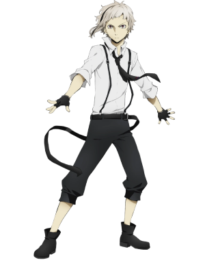
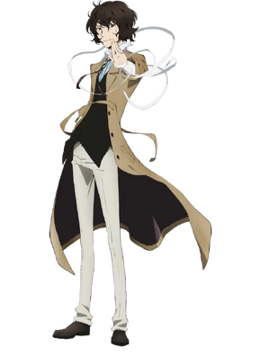
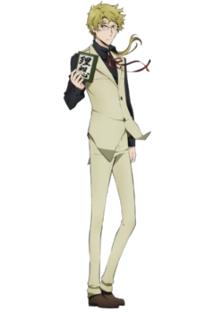
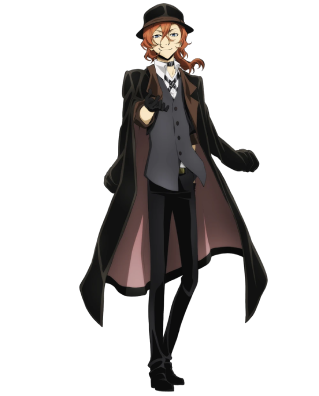
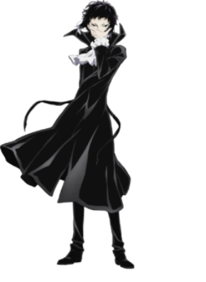
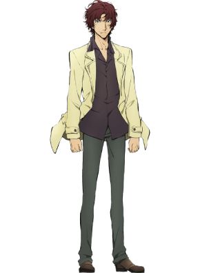

-
Atsushi Nakajima
Atsushi es entusiasta y apasionado, se preocupa profundamente por sus compañeros miembros de la Agencia Armada de Detectives y por el bienestar de los civiles y de las personas en malas situaciones. Durante su examen de ingreso que todos los miembros deben aprobar para unirse a la Agencia, se enfrenta a una amenaza de bomba simulada. Usa su cuerpo para cubrir la bomba y proteger a los otros miembros, a quienes nunca había conocido. Su pasado traumático afecta gran parte de su vida diaria, y está atormentado por pesadillas, flashbacks y el monólogo interno del director del orfanato que abusó de él. Tiene un sentido de autoestima muy bajo y es algo ingenuo, lo que le hace pensar Inicialmente se siente impotente cuando se enfrenta a situaciones peligrosas. Cuando está paralizado por la culpa y/o el miedo, tiene dificultad para reaccionar o entender qué hacer. También tiende a reaccionar con fuerza ycreer las cosas al pie de la letra, confiando en el juicio de los demás por encima del suyo, incluso abandonando sus propios instintos.
-
Osamu Dazai
Dazai es una persona misteriosa, sus verdaderas intenciones nunca se revelan a menos que él las revele. La persona que se acercó más a la verdad de su personalidad, como reconoció el propio Dazai, fue su amigo Sakunosuke Oda, quien le dijo, "No vas a encontrarlo. Ya deberías saberlo. No importa si estás del lado que mata gente o las salva, no habrá nada que pueda llenar ese vacío. Ningún lugar en este mundo que podrá llenar tu soledad. Te quedarás vagando en la oscuridad para siempre". A Dazai se le suele llamar vago, ya que Kunikida siempre lo regaña por ser improductivo y holgazán. A pesar de eso, ha demostrado un agudo ingenio, deduciendo todas las situaciones poco probables que llevaron a Atsushi a creer que estaba siendo acechado por un tigre cuando él era el tigre en cuestión. Tiene total confianza sin importar el tipo de situación con la que esté lidiando, ya sea en combate o simplemente en situaciones malas que creó en primer lugar. En la mayoría de las ocasiones, Dazai es demasiado dramático, toma la mayoría de sus acciones como una broma y, aunque son planes muy pensados, no se da crédito por la mayor parte de lo que ha hecho. A Dazai le gusta burlarse de cualquiera y de todos si eso significa que puede hacer reír.
-
Doppo Kunikida
Como miembro de la Agencia Armada de Detectives, Kunikida es muy profesional y diligente cuando se trata de su trabajo porque para él, la reputación de la agencia tiene prioridad sobre cualquier otra cosa. Constantemente siente la necesidad de organizar, recopilar y programar cada detalle, por lo que puede parecer demasiado estricto y severo durante las investigaciones. También puede ser visto como práctico hasta el extremo, ya que casi consideró abandonar a un Atsushi secuestrado porque la presencia del niño podría complicar a la agencia. A pesar de esto, Kunikida es un detective leal y confiable en el que muchos en la agencia confían debido a su capacidad autoritaria y naturaleza responsable.
-
Chuuya Nakahara
Por fuera, Chūya es un hombre temperamental bastante arrogante y directo. Se deleita en la lucha, feliz de mostrar su habilidad combativa y enorgulleciéndose de su reputación como el artista marcial más fuerte de la mafia. No está por encima de ridiculizar a sus oponentes en medio de una pelea. Como corresponde a un Ejecutivo, no tiene reparos en eliminar a los enemigos de Port Mafia por cualquier medio necesario, incluido el asesinato, sin embargo, no es tan homicida en sus tácticas como tienden a serlo Ryunosuke y Black Lizard.
-
Akutagawa Ryunosuke
Akutagawa tiene una visión social darwinista del mundo en blanco y negro, y afirma que las personas débiles deben morir y dar paso a las más fuertes. No le teme al dolor y la derrota, aunque sólo sea para escuchar una palabra de "cierta persona". Su naturaleza despiadada y viciosa lo convierte en uno de los miembros más peligrosos de Port Mafia, temido tanto por aliados como por enemigos. Gran parte de la obediencia que recibe de los subordinados de Black Lizard proviene en gran parte del miedo a su mal genio y la intolerancia general a la incompetencia. Akutagawa, el "perro" de Port Mafia, muestra una aguda voluntad de cometer crímenes violentos para promover no solo los objetivos de la mafia sino también su propia agenda. Despiadado y contundente, Akutagawa no discrimina cuando se trata de sus objetivos, y no tiene reparos en matar. Cualquiera de civiles inocentes, niños y enemigos por igual. A pesar de su hostilidad hacia los débiles, no le gustan las torturas sin sentido y prefiere matar de una vez siempre que sea posible.
-
Sakunosuke Oda
Oda era un hombre que Dazai describió como amable, a pesar de trabajar para la mafia, durante los eventos del Capítulo 34, mientras recordaba a su amigo durante una conversación con Kyōka. Tenía un temperamento agradable y, por lo tanto, era una de las pocas personas de la mafia que rara vez mataba. Sin embargo, cuando estaba furioso, mostró habilidades de lucha asombrosas y fuertes sobre las que Dazai había advertido a Akutagawa. Dazai lo llamó "un hombre que no tiene ningún motivo oculto". Oda quiere decir lo que dice y, a veces, asume erróneamente eso de otras personas, por ejemplo, cuando dio respuestas serias a las explicaciones en broma de Dazai sobre cómo sufrió sus diversas lesiones. Sin embargo, también tenía un lado increíblemente perspicaz que le permitió acercarse más a la comprensión de Dazai, a quien se refirió como "su querido amigo, que se había cansado del mundo y simplemente está esperando morir". Es su comprensión de la soledad de Dazai, así como su arrepentimiento de no poder hacer nada al respecto, lo que lo llevó a dejar atrás las últimas palabras que se convirtieron en el detonante para que Osamu Dazai abandonara a la mafia en favor de tallar un camino más brillante para sí mismo, algo que Oda quería hacer.